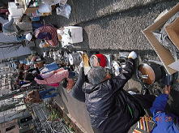
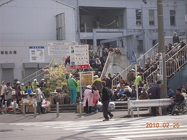
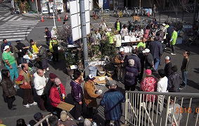
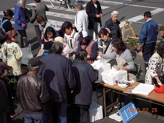

◇ ２０１０年 寿町炊き出し
（ホームレスの方々の支援）
５月になったような、とても気持ちの良いお天気でした。
たくさんの皆さんに手伝って頂き、大勢の皆さんに食事を差し上げることが出来ました。
カナン教会の皆様にも感謝です。
何より、このような奉仕の機会を与えてくださった神様に感謝です。
＜皆様の声を少しだけ紹介します＞
「毎週木曜日に来るの？」
「どこかに（案内の）張り紙した？」
「このカレーはうまい！」
↑ 「家庭での手作りですから」とお答えしました。
「おにぎり大きいのと取り替えて」
「あそこに倒れている人のにカレーをやってくれ」
↑ （これは作り話ではありません）
ご飯もカレーも福神漬けも、全部召し上がって頂き終了となりました。
 
 
食事を楽しんで頂いた方 （概数です）
| カレー |
２００人 |
| カレー（お代わり） |
１００人 |
| おにぎり |
６０人 |
| その他 飲み物など |
|
寿町（ことぶきちょう）とは(wikipediaからの引用)
神奈川県横浜市中区に所在する町名である。1丁目～4丁目の字がある。面積は0.070km2、人口は3,449人、うち外国人は503人である（2000年度）。
これ以外にも住民登録をしていない人が多数居住しており、実際には約6300人の人々が生活していると言われている。
また寿町を中心とし、周囲の扇町や松影町を含む約60,000平方メートルほどの地域を指して寿地区と呼ぶこともある。JR根岸線関内駅・石川町駅、横浜市営地下鉄伊勢佐木長者町駅が徒歩圏内にあり交通の便は非常に良い。
寿地区は首都高、根岸線を挟んで関内の反対側に位置し日雇労働者が宿泊するための「ドヤ」という簡易宿泊所が100軒以上立ち並び「ドヤ街」と呼ばれる地区である（ドヤ街は、日雇労働者の就労場所と合わせて寄せ場とも呼ばれる）。寿地区は、東京都の山谷、大阪市あいりん地区（釜ヶ崎）と並ぶ三大寄せ場の1つとされる。
人の子（イエス様）が、その栄光を帯びて、すべての御使いたちを伴って来るとき、人の子はその栄光の位に着きます。
そして、すべての国々の民が、その御前に集められます。彼は、羊飼いが羊と山羊とを分けるように、彼らをより分け、羊を自分の右に、山羊を左に置きます。
そうして、王は、その右にいる者たちに言います。『さあ、わたしの父に祝福された人たち。世の初めから、あなたがたのために備えられた御国を継ぎなさい。
あなたがたは、わたしが空腹であったとき、わたしに食べる物を与え、わたしが渇いていたとき、わたしに飲ませ、わたしが旅人であったとき、わたしに宿を貸し、わたしが裸のとき、わたしに着る物を与え、わたしが病気をしたとき、わたしを見舞い、わたしが牢にいたとき、わたしをたずねてくれたからです。』
すると、その正しい人たちは、答えて言います。『主よ。いつ、私たちは、あなたが空腹なのを見て、食べる物を差し上げ、渇いておられるのを見て、飲ませてあげましたか。いつ、あなたが旅をしておられるときに、泊まらせてあげ、裸なのを見て、着る物を差し上げましたか。また、いつ、私たちは、あなたのご病気やあなたが牢におられるのを見て、おたずねしましたか。』
すると、王は彼らに答えて言います。『まことに、あなたがたに告げます。あなたがたが、これらのわたしの兄弟たち、しかも最も小さい者たちのひとりにしたのは、わたしにしたのです。』
新約聖書マタイによる福音書 ２５章
 |